Impact
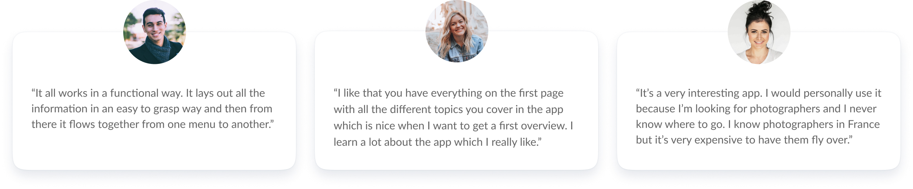
Solution
Personalized onboarding
- To help users quickly find the right photographer for their needs, we have created a personalized onboarding process that takes them directly to the search results page upon completion.
- Alternatively, users can select the categories and styles they are interested in on the homepage and photographer pages to find suitable photographers.
Advanced filters & transparent pricing
- For a faster search, advanced search filters are available for category, location, price range and style.
- Transparent pricing and detailed reviews on the photographer profile also help users to speed up their decision-making process.

In-product availability checks
- Checking photographer availability often involves lengthy back-and-forth messaging.
- To provide a simple solution, checking availability is now as easy as a few clicks. Users receive instant feedback on whether the photographer is available for their event and can book directly.

Short checkout experience & smart defaults
- When users are busy planning their event, the last thing they need is a lengthy booking process.
- To make the booking process as quick and efficient as possible, we've streamlined the number of steps, utilised default states, and automatically populated personal information for existing users.
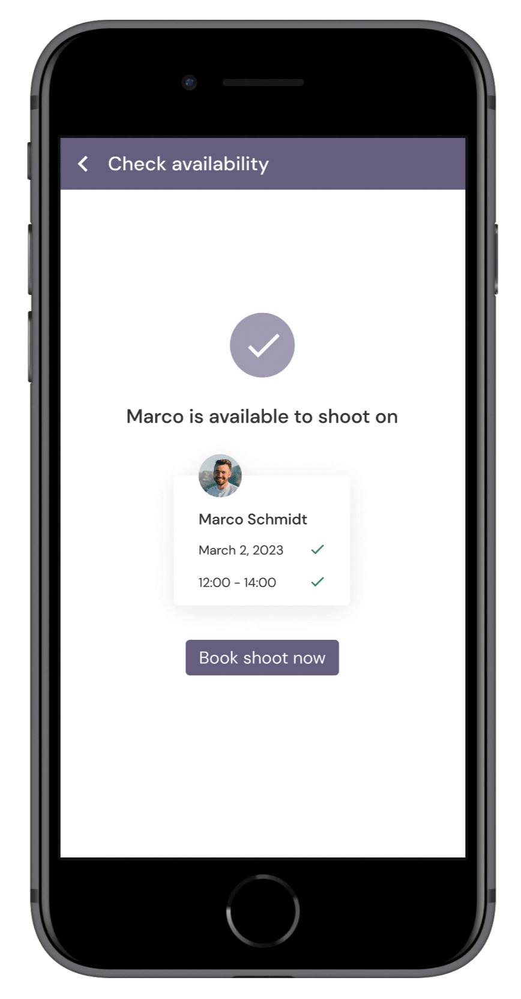
Submit editing preferences
- Users often have little control over the final image quality after the shoot. This can be frustrating when images don't turn out as expected.
- To give users more control over the outcome, they can add notes and reference numbered images to express additional wishes for editing.
- After 48 hours, users will receive their final images and can download them all at once.

Competitive Analysis
We began by conducting a thorough desk research and analysis of 9 competing web apps to identify problem areas and competitive advantages for our product.
The research included finding struggles faced by clients and photographers on Reddit and specialized forums, which later informed our user interview goals.
Additionally, a competitive analysis examining strengths, weaknesses, booking experiences, revenue models, and load times, helped us identify gaps in current offerings and potential opportunities for Lenslane to stand out in the market.
Opportunities for Lenslane
- Clear search, navigation, and categorization of content.
- View photographer’s portfolio and profiles before booking.
- Create a short booking experience.
- Transparent pricing.
- Enable direct messaging and notifications.
- Clean and visually appealing design that is optimized across devices.
Key Findings
- Cumbersome search experience and filter selection.
- Lack of logical categorization of content and confusing labeling.
- Responsive design issues and a lack of optimization for mobile and desktop.
- Cluttered design lacking visual hierarchy and white space.
- Messaging is available on mobile only.
- Intransparent pricing: sign up required to view prices or pricing is shared further down the booking experience.
- No free choice of photographers: matching photographers to clients without the ability to view their work in advance.
Alignment
While I was responsible for analyzing sweet escape, perfocal, snap squad, angle, canvera and fotomato, Yashika did a competitive analysis on fiverr, snappr and peopleperhour. After presenting our findings in a meeting, we decided on key opportunities for Lenslane based on their frequency of occurrence, potential user value, and business goals.
User Research
Next, we interviewed 3 photographers and 4 clients to explore experiences in finding and booking photographers, common obstacles, information needed for booking, and preferred communication methods.
To use our time effectivly, we decided to split the research. While Yashika interviewed photographers, I focused on clients.
Finding enough participants on Slack and Reddit was challenging and time-consuming. Eventually, we opted to work with our small sample size, as the sessions provided rich insights into the problem space already.
Key Findings
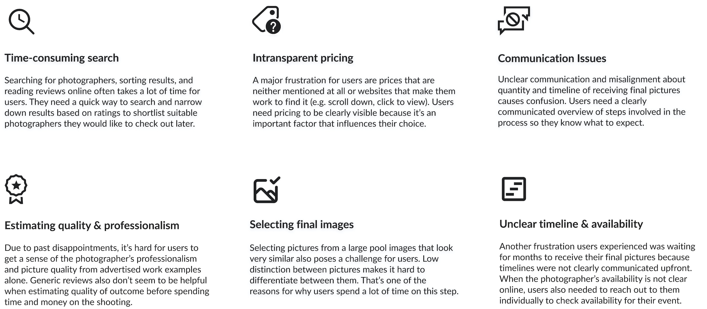
Empathizing with the User
Next, we created a persona from research to communicate insights and align the team on user’s needs, goals, and frustrations.
As a reference throughout the project, the persona helped us empathize with users and help ensure that user needs and goals remained at the forefront of product decisions.
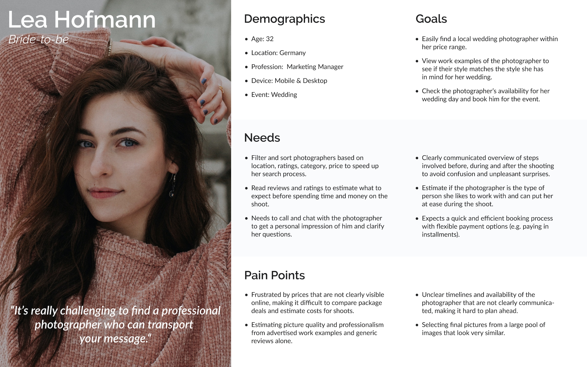
Mapping Out the Journey
Using the persona as a guide, we created a user journey map to visualize the process Lea would need to go through to accomplish her goals in Lenslane.
Lea's Journey: Lea is getting married in a month. She has already spent time searching for photographers online, but is having trouble finding one with her desired style. She will use our app to book a local, affordable and experienced wedding photographer with the style she has in mind.
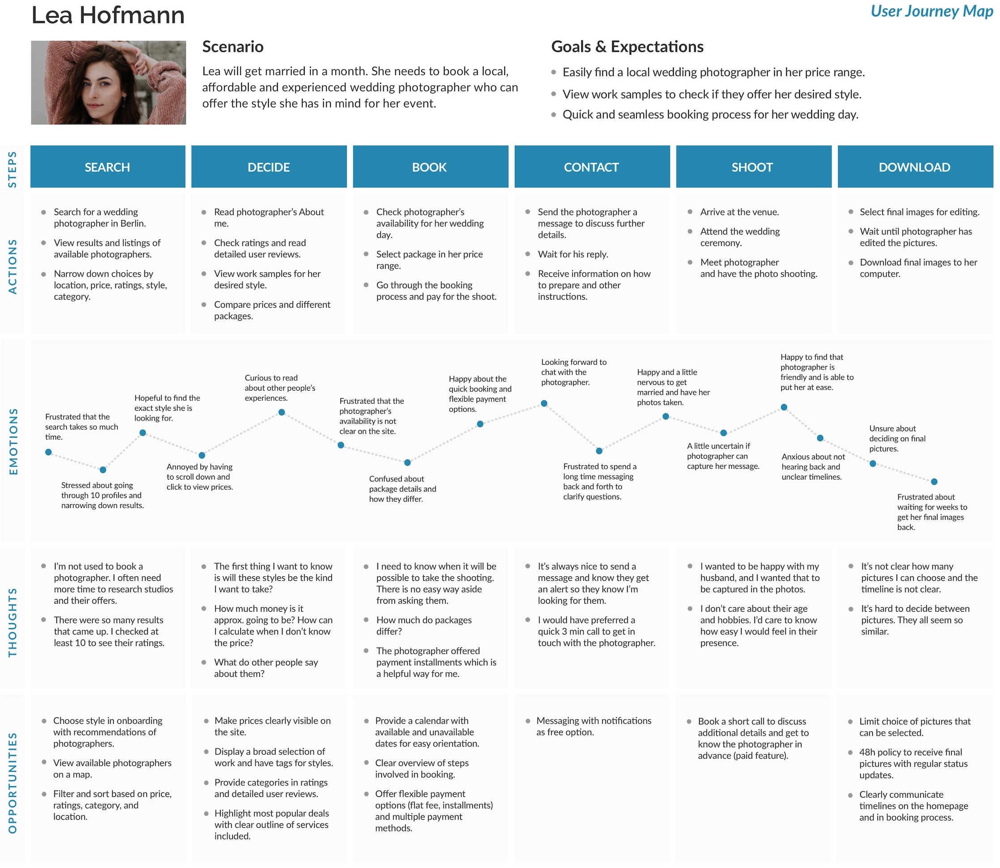
Prioritized features based on journey maps
- Sign up & onboarding
- Search for photographer
- Check availability
- Book session
- Message photographer
- Select and submit images for editing
- Download final images
User Flows
Using the journey maps and personas as a guide, we created user flows to understand the specific tasks Lea would need to complete and the pages needed to complete them.
User flow for finding a wedding photographer
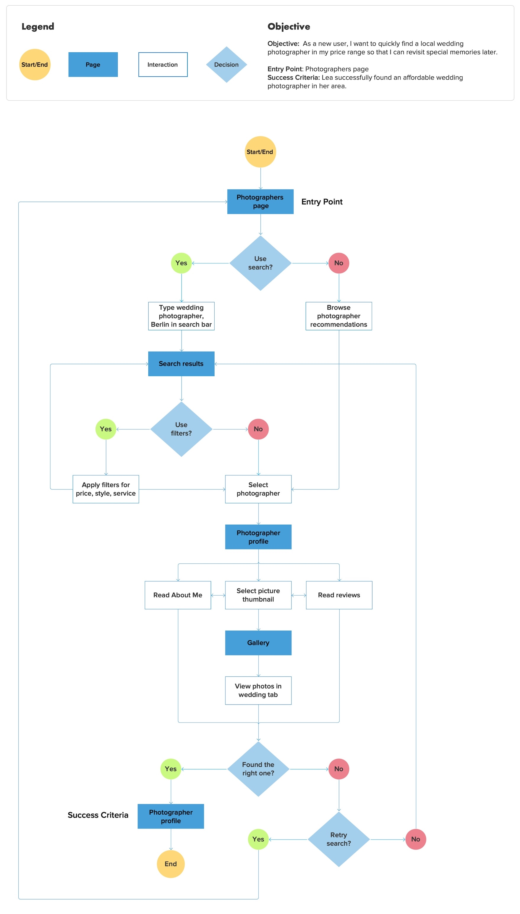
Information Architecture
Using user flows and journey maps, we developed a sitemap for organizing photographer and client pages in an efficient way.
The challenge here was to determine accessible pages for the two user groups. In order to simplify the information architecture, we identified key content and merged related pages for improved navigation and efficient web app use.
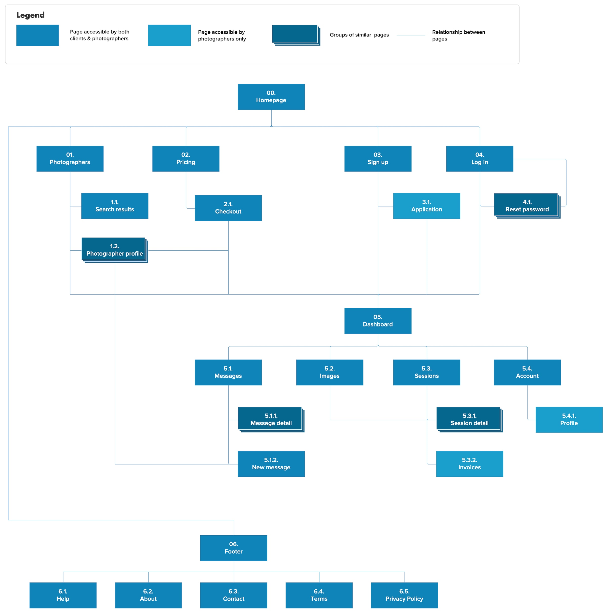
Exploring possible solutions
Utilizing the sitemap, user flows, and personas as a guide, we created low-to mid-fidelity wireframes for key features through rapid prototyping.
The main challenge during this stage was adapting designs for mobile and desktop while considering technical limitations.
To increase performance and ensure technical feasibility, we replaced a mobile calendar with a date picker and decided to design the desktop version at 800 x 600 px to accommodate people with older monitors.
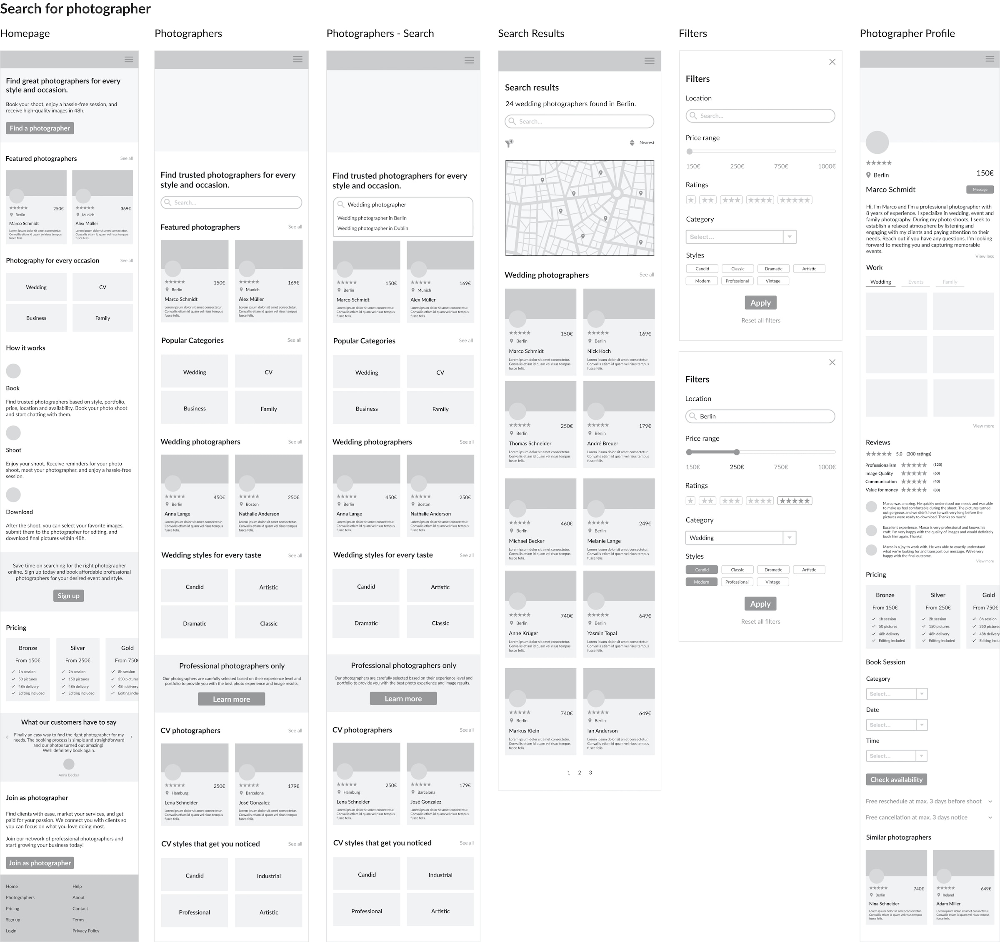
Usability Testing
To assess learnability, efficiency, and errors for first-time users, we conducted moderated remote usability tests with 5 participants via Google Meet.
Using this method allowed us to test in user’s natural environment and ask follow-up questions to minimize bias and maximize understanding.
Metrics
- Success rate to measure learnability.
- Error rate to measure errors; severity of errors also measured by Jakob Nielsen’s rating scale.
- Time on task to measure efficiency.
- SEQ to measure ease of use by asking participants to rate the difficulty from 1-7 after each task.
Recruitment
Recruitment was done by following up with persona users from interviews and posting on Slack.
Test Results
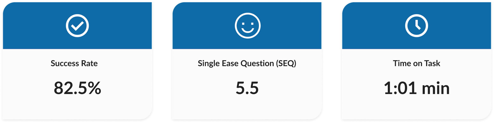
Most participants were able to complete tasks quickly and easily. The biggest issues encountered were finding a photographer, unclear pricing, and confusing information on the dashboard.
Issue 1: Stuck on the task of finding a photographer (Severity: 4).
2/5 users struggled to find a photographer. Most of them clicked on wedding categories instead of using the search bar. They also overlooked filters and reported information overload on the photographer page, which distracted them from the task at hand.
To address this, we redesigned the page to reduce the number of visible categories, enhance visual hierarchy, link categories to search results for easier browsing, and include a filter button for improved discoverability.
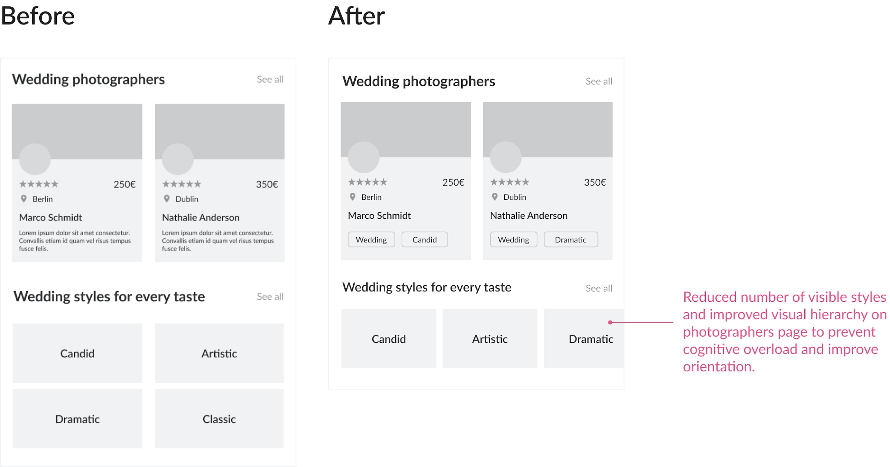
Issue 2: It’s not clear how pricing works (Severity: 3).
3/5 users found photographer pricing versus packages confusing, and were uncertain about the number of edited images they would receive after the shoot.
As a result, we created a new pricing page with a FAQ section to provide more transparency on costs and the overall booking process.
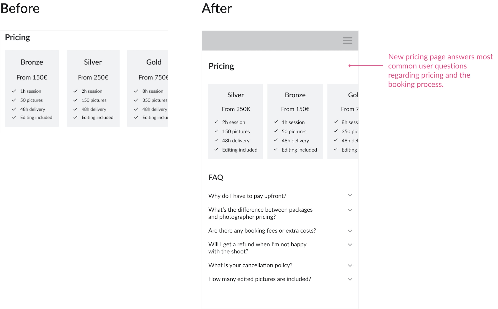
Visual Design
After fixing issues, it was time to bring Lenslane to life with visuals. The main challenge here was selecting a suitable color palette.
We explored various colors that fit our brand and ultimately settled on purple and pastel tones to highlight creativity and elegance. For typography, we paired DM Serif Display with DM Sans for a modern and friendly aesthetic.
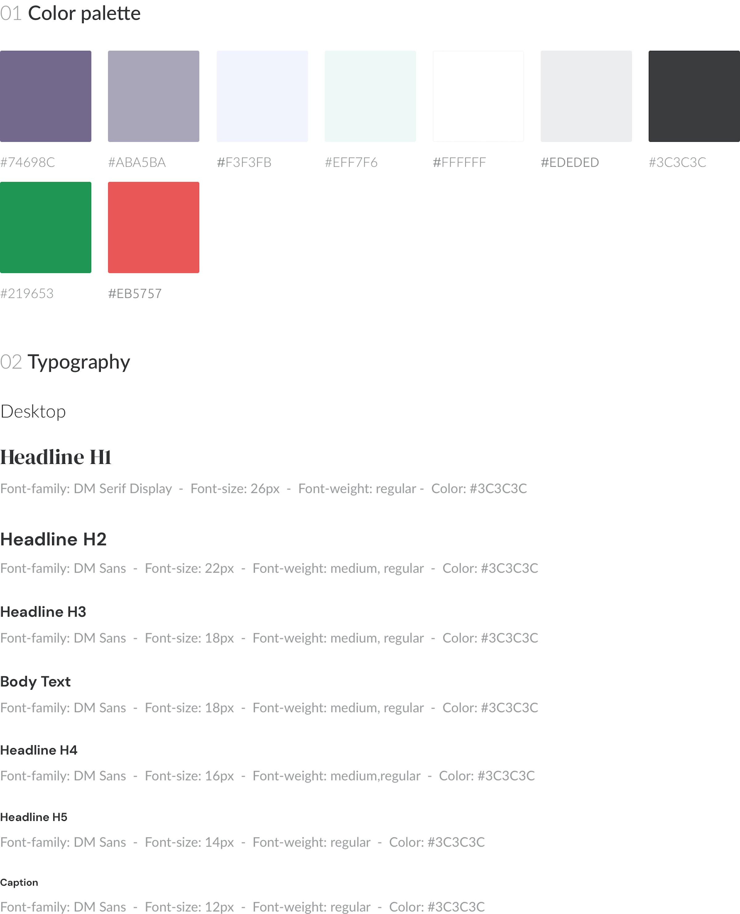
Mockups
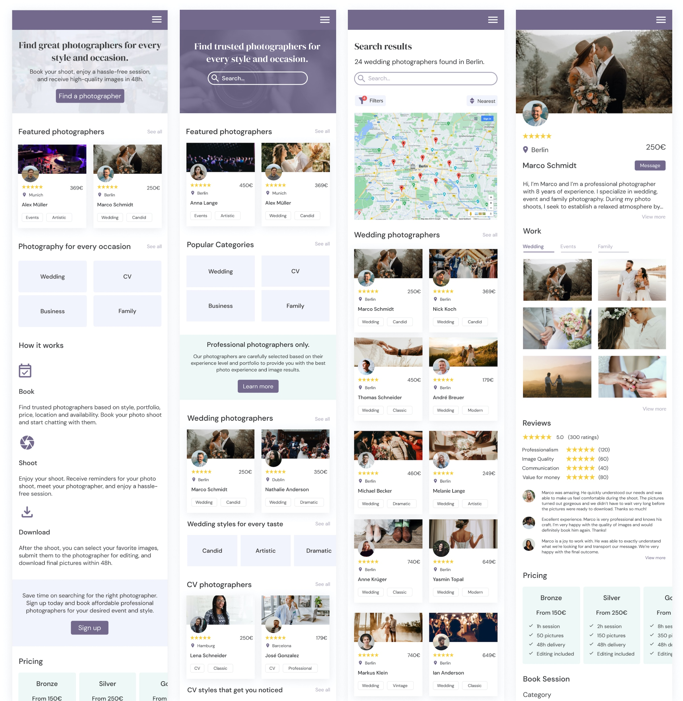
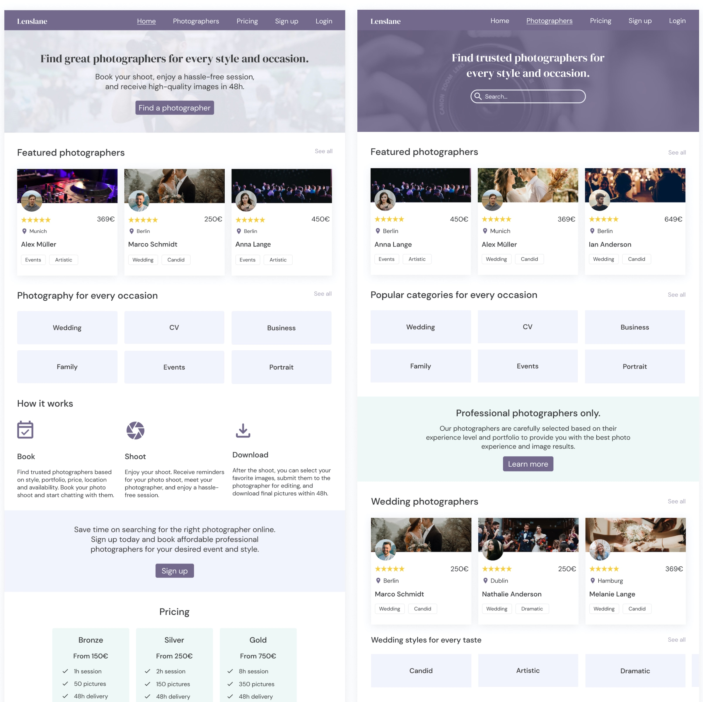
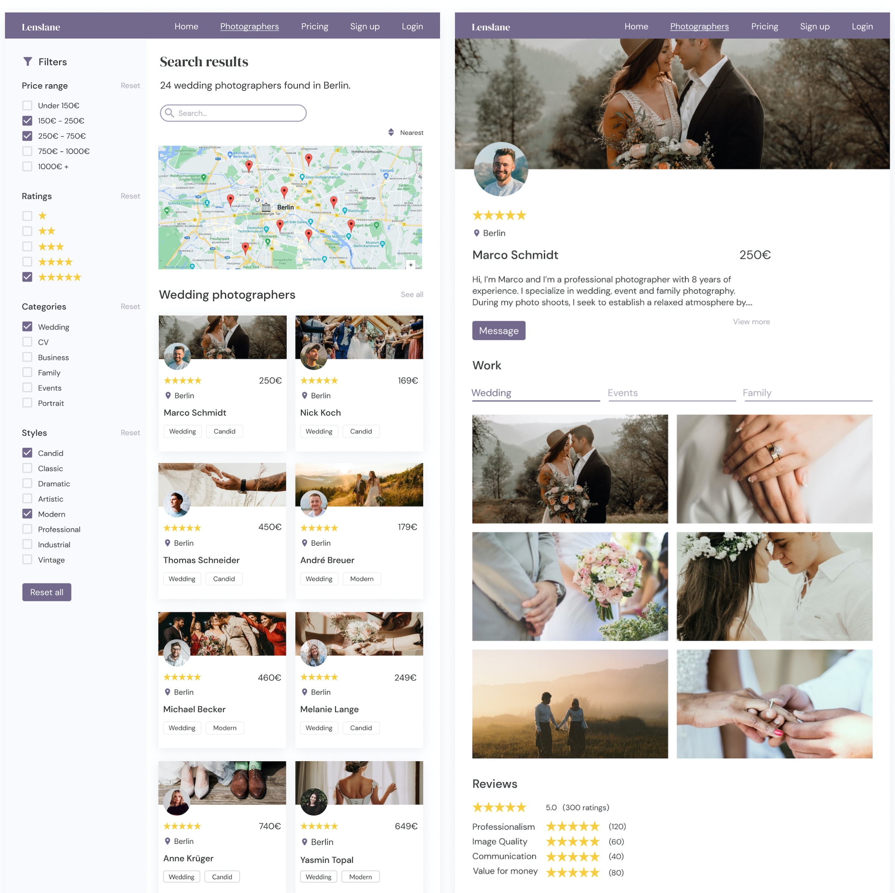
View Prototype
After having implemented user testing feedback and the visual design, we finalized the prototype using Figma. Feel free to interact with the prototype to see how it works.
Learnings
Although the outcome of this project is a digital photography marketplace, it was not the first idea we settled on. Initially, we started out with a problem assumption that focused on the lack of findability of photo walks and workshops online.
However, after surveying users on Reddit and Slack for 3 days, our initial hypothesis was rejected. The majority of users hadn't attended photo events in the past year and thus wouldn't consider using a platform that improves the discoverability of photo events and workshops online.
Early validation with users was crucial for pivoting towards a digital photography marketplace. The in-depth research enabled us to understand user needs better and ultimately create a solution that addresses their problems more effectively.